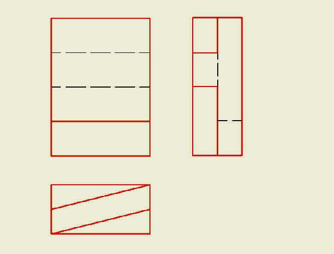

|
|||||||||||||||||||||||||
|
MENU Zadání výkresù Podpora výuky Odkazy Email: |
Pravoúhlé promítání
Toto promítání je dosud nejrozšíøenìjším zpùsobem zobrazování ve strojnickém kreslení. Pøedstavuje plošné, tzv. dvojrozmìrné zobrazení (2D). Jeho výhodou je snadnost kótování a øešení metrických úloh.Objekt mùže být promítán až na šest navzájem kolmých prùmìten. Platí však pravidlo, že se zobrazení provede jen nezbytnì nutným poètem prùmìtù. V praxi se promítá do tøí hlavních prùmìten, popø. pouze do dvou a v jednoduchých pouze do jedné prùmìtny. V evropských zemích, tedy i v Èeské republice, se pøednostnì používá promítání v 1.kvadrantu, tzv. „evropské“, oznaèované ISO E. Pøi promítání v 1.kvadrantu je zobrazovaný objekt umístìn mezi pozorovatelem a prùmìtnami. Zobrazování na výkrese provádíme pouze v jedné rovinì, a proto si pøedstavíme jednotlivé prùmìtny sklopené do nákresny, která je ztotožnìna s nárysnou. Takto sklopené, pøíp.otoèené, prùmìtny se nazývají sdružené prùmìtny. Obrazy ve sdružených prùmìtnách se nazývají sdružené obrazy.
Souvislá tlustá èára -
viditelné obrysy a hrany

|
||||||||||||||||||||||||